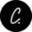

Conversation 749
Neighbours Light Art Festival
Prompt 1 · You
philips signify b amsterdam light festival tracking takeshi toshka carre
Response 1 · Google AI Mode
The Japanese artist duo TOCHKA (Kazue Monno and Takeshi Nagata) created the light painting animation artwork titled "Neighbours" for the Amsterdam Light Festival in collaboration with children from 30 Amsterdam classes via Stichting Juf op Straat.
Amsterdam Light Festival
Artwork Details ("Neighbours" by TOCHKA)
- Artists: Kazue Monno and Takeshi Nagata (TOCHKA), known for their signature PiKA PiKA light-painting technique combining long-exposure photography and stop-motion animation. Amsterdam Light Festival +1
- Concept: Focuses on daily communication and connections with roommates, family, and neighbors in our home environments. Amsterdam Light Festival
- Creation: Produced with local school children translating everyday messaging and interactions into moving light art. Amsterdam Light Festival
- Venue Context: Installations span across the Amsterdam canal network and surrounding cultural landmarks such as the Carré Theatre (Koninklijk Tuschinski / Royal Theatre / Carré) along the Amstel riverfront.

Cityden Aparthotels +1
Festival Information
- Upcoming 15th Edition: Runs from November 26, 2026, through January 17, 2027. Amsterdam Light Festival
- Hours: Daily from 4:30 PM to 11:00 PM (with special holiday and New Year's Eve schedules). Amsterdam Light Festival
- Access: The light artworks are free to view on foot or by bike, with optional paid canal cruises and digital route guides available via the Amsterdam Light Festival Official Site. Winter Festival Amsterdam +1
Would you like help finding boat cruise departure points near Carré or checking the walking route map for the upcoming festival dates?
Source links preserved from this response
- Amsterdam Light Festival
https://amsterdamlightfestival.com/en/artworks/neighbours - Amsterdam Light Festival
https://amsterdamlightfestival.com/en/artists/tochka - Cityden Aparthotels
https://www.cityden.com/blog/amsterdam-light-festival-2025-2026/ - Amsterdam Light Festival
https://amsterdamlightfestival.com/en/edition-15 - Amsterdam Light Festival
https://amsterdamlightfestival.com/en/dates-hours - Amsterdam Light Festival Official Site
https://amsterdamlightfestival.com/en - Winter Festival Amsterdam
https://winterfestivalamsterdam.com/event/amsterdam-light-festival/
Prompt 2 · You
phillips signify
Response 2 · Google AI Mode
Signify N.V. (formerly Philips Lighting) is the world's largest lighting corporation. Originally founded as part of Philips in Eindhoven, it was spun off as an independent entity in 2016 and listed on the Euronext Amsterdam Stock Exchange under the ticker LIGHT. While the company rebranded to Signify, it continues to design, manufacture, and sell its products under the highly trusted Philips brand license (including Philips Hue, Philips LED, and professional lighting lines).  www.signify.com +1
www.signify.com +1
www.signify.com +1Corporate Overview & Strategy
- The Brand Split: Signify focuses exclusively on smart illumination, consumer connected lighting, and internet-of-things (IoT) ecosystems. In contrast, Royal Philips handles healthcare technology.
 Philips
Philips - New Leadership: The company appointed a new CEO, As Tempelman, to steer a strategic pivot away from traditional, flat bulb markets and toward high-margin connected lighting products.
 Reuters +1
Reuters +1 - Ecosystem Expansion: Under its recent strategy, Signify opened up its historically closed ecosystem. For example, its smart-lighting brand Philips Hue integrated natively with wall panel systems from Nanoleaf and home audio tech via Sonos. Inside Lighting
Current Financial Performance (Fiscal Year 2026)
Signify is currently navigating a transitional period focused on aggressive cost-reduction and restructuring to combat soft market demand:
Edison Report +1
| Metric | Recent Results (Q2 2026) | Full-Year 2026 Outlook |
|---|---|---|
| Sales | €1.33 Billion (Down 3.6% in comparable sales) | Flat growth; driven by a structural cost-savings program |
| Adjusted EBITA Margin | 6.1% (Impacted by retailer de-stocking) | Maintained target range of 7.5% to 8.5% |
| Net Income | €17 Million (After €31M in restructuring charges) | Forecasted recovery in H2 due to seasonal strength |
The business is tracking toward long-term margins of roughly 10% by 2029 by operating as a leaner, software-driven entity rather than just a hardware manufacturer.
Inside Lighting
Role in Amsterdam & Light Art Festivals
- Amsterdam Light Festival & GLOW: Originating from early executive sponsorship by the Philips Lighting division, Signify regularly supplies the heavy architectural LED structures (such as Philips Color Kinetics) used by international artists to turn canals and public spaces into light canvases. www.signify.com +1
- Smart Infrastructure: Beyond festivals, they develop large-scale smart lighting projects locally, including dynamic color-changing systems inside major venues like the Johan Cruijff ArenA (Amsterdam ArenA). www.signify.com
If you are evaluating the company from an investment perspective, I can set up a task to track the upcoming Q3 2026 earnings report scheduled for October 23 and notify you when the new numbers go live. Would you like to track this?
Source links preserved from this response
- Euronext Amsterdam Stock Exchange
https://www.euronext.com/en/markets/amsterdam - www.signify.com
https://www.signify.com/global/our-company/news/press-releases/2018/20180516-philips-lighting-is-now-signify - Philips
https://www.philips.com/a-w/about/news/archive/corpcomms/news/press/2026/philips-second-quarter-results-2026.html - Reuters
https://www.reuters.com/company/signify-nv/ - Nanoleaf
https://nanoleaf.me/ - Sonos
https://www.sonos.com/ - Inside Lighting
https://inside.lighting/news/26-10/612-things-were-watching-signify-reports-earnings - Edison Report
https://edisonreport.com/2026/07/24/signify-q2-2026-results-profit-falls-outlook-maintained/ - gloweindhoven.nl
https://gloweindhoven.nl/en/de-onlosmakelijke-band-tussen-eindhoven-lichtkunstfestival-glow-en-founder-signify-2/ - www.signify.com
https://www.signify.com/global/our-company/news/press-release-archive/2012/20121207-philips-provides-lighting-for-sculpture-outside-amsterdam-city-hall-as-partner-to-amsterdam-light-festival - www.signify.com
https://www.signify.com/global/our-company/news/press-release-archive/2016/20160609-amsterdam-arena-and-philips-lighting-innovate-together-to-create-the-stadium-of-the-future